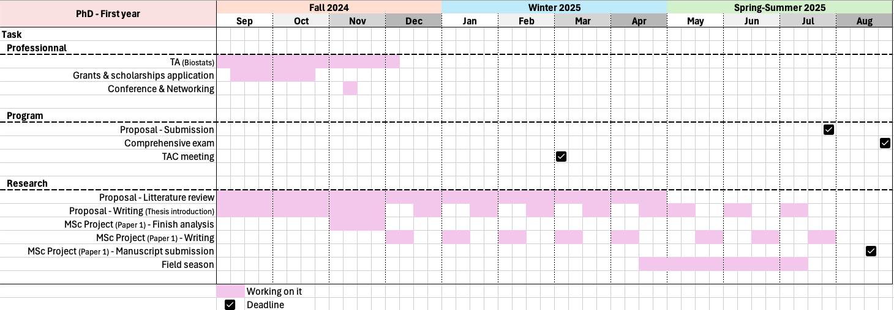

Coping with climate change.
Implications of the evolution of body mass in Yellow-Bellied Marmot’s (Marmota flaviventer) in the last half-century.
Introduction
Climate change
Climate change is unequivocally recognized as one of the most pressing challenges of our time. Its global impacts, such as melting polar ice caps and rising sea levels, are well documented and increasingly evident. Climate change is characterized by rising temperatures, changing season lengths, increased environmental variability and unpredictability, and a growing frequency and severity of droughts and extreme weather events (Intergovernmental Panel On Climate Change (Ipcc) 2022).
Climate change has numerous impacts on human society which are, for example, well represented in the city of Ottawa,Canada. Temperature, snow and rainfall in the Canadian capital over the last century reflect worrying but expected trends (e.g., increasing temperature, less snow, more rain, Walsh and Patterson 2022), and future projections are not reassuring (e.g., further increases in temperature, Zhai et al. 2019). Illustrating this trend is the management of the Rideau canal ice skating rink. Indeed, in the past few years, the opening of the world’s longest ice staking rink has been more and more uncertain, and its future is unfortunately but, fatally, questionable.
Above all, as shown by countless studies, climate change deeply impacts the vast majority of Earth’s ecosystems (Intergovernmental Panel On Climate Change (Ipcc) 2022). Of these, Alpine habitats are especially susceptible to climate change, with more pronounced and severe droughts, as well as increased average temperature and variability. Hence, climate change puts high elevation environments at greater risk and may cause changes at several levels in the ecosystems from plant to animal communities (Giorgi et al. 1997; Grabherr et al. 2010; Inouye and Wielgolaski 2003; Kittel et al. 2002; Ohmura 2012), with major impacts on plants availability affecting herbivores density and potentially predator dynamic. Therefore, Alpine animals must adjust not only to changes in temperature and precipitations, but also potentially to food availability and predator pressure.
The profound ecological upheavals resulting from climate change put numerous species at risk, which must act accordingly to avoid extinction, either by dispersing or adapting (Gienapp and Brommer 2014). Hence, it is crucial to improve our understanding of how natural population cope with this rapid and unpredictable changes in order to conduct efficient conservation policies.
Life-history traits
Life-history theory studies ressource allocation between the life-history traits of an individual. This theory considers that individuals in natural condition have limited time and ressources and therefore must trade-off their allocations between competing functions such as growth, maintenance and reproduction (Bell 1980; Roff 1992). Stearns (1992) defines a life-history trait as phenotypic characteristics that will directly impact an individual’s selective value or “fitness” (i.e., individual’s capacity to transmit their genes to the next generation, measured as the product of survival and reproductive success). However, this is a wide definition that could correspond to almost any traits as most phenotypic traits could impact either survival or reproductive success. For example, body condition and time of nesting both predicts the probability of survival of nesting females in tufted ducks (Aythya fuligula), common pochard (Aythya ferina), and northern shoveler (Anas clypeata) (Blums et al. 2005); bold and active trinidanian guppies (Poecilia reticulata) survive longer against predators (Smith and Blumstein 2010); number of mate and general reproductive success is impacted by crest and gluteal size in male western gorillas (Gorilla gorilla, Breuer et al. 2012); high agressivity, related to testosterone correlates with greater reproductive success in females dark-eyed juncos (Junco hyemalis, Cain and Ketterson 2012). Conversely, one could argue that no trait would impact directly, per se, an individual’s fitness. For example, horn size in bighorn sheep Ovis canadensis, is correlated with lifetime reproductive success (Deakin et al. 2022), but is it direct predictor or does it only impact fighting ability, which would improve individual mating success?
Life-history traits usually referred to species characteristics describing their life cycles and impacting population dynamics (e.g., mass at first reproduction, age of first reproduction, size at birth, Stearns 1992). However, following Stearn’s definition of life-history traits (i.e., phenotypic characteristics that will directly impact an individual’s selective value), any traits under selection (i.e., impacting an individul’s survival and or reproductive success) is a life-history traits. Furthermore another objection with this definition is that, following it, life-history traits both define and are defined by fitness, therefore making this reasoning tautological.
Reading the literature, I realized that a lot of authors working on life-history traits don’t explicitly define the notion of life-history trait, and when they do, definitions often lack clarity or contain circular reasoning. The community would benefit from working towards a consensus on a clearer, more comprehensive definition. For the remainder of this document, I will define a life-history trait as a species characteristic that impacts population dynamics through its effects on individual survival and reproductive success, and that can be meaningfully measured at a specific point in an individual’s life cycle (e.g., size at birth, age at maturity, number of offspring).
The role of body mass
We know that body mass is strongly related to both temperature acclimation (Kurz 2008; i.e., thermo-regulation, Riesenfeld 1981) and food abundance (Acquarone et al. 2002). Consequently, climate change is expected to impact body mass, making it crucial to study how individuals will respond.
Body mass plays a critical role for most species. First, it affects individual metabolic rate (Darveau et al. 2002). For instance, Weibel et al. (2004) showed a strong correlation between maximal metabolic rate and body mass in mammals. Body mass is also strongly related to an individual’s energetic reserves, thereby impacting resilience to environmental challenges by buffering against seasonal food scarcity (Heldstab 2017). More generally, body fat can be considered a buffer against harsh environments (Denryter et al. 2022). Extending this reasoning to a wider timescale, we can expect that larger individuals may better buffer resource-poor years, increasing their resilience to environmental variability and unpredictability (Einum and Fleming 2004).
From an ecological perspective, body mass influences population dynamics by affecting both survival and reproductive success. For example, body mass explains 89% of hibernation survival in juvenile yellow-bellied marmots (Marmota flaviventer, Armitage 2014); individuals with heavier early-winter body mass have higher overall survival probability in adult male canvasbacks (Aythya valisineria, Haramis et al. 1986); winter body mass variation significantly impacts reproductive success in Norwegian moose (Alces alces, Milner et al. 2013); larger body size correlates with higher mating success in northern elephant seals (Mirounga angustirostris, Crocker et al. 2012); and individuals with greater energy reserves exhibit better reproductive capacity in bighorn sheep (Ovis canadensis, Festa-Bianchet et al. 1998). Larger individual will also be advantaged in term of competitive ability and social dominance. For example, in the case of contests for mating territory, male Calopteryx maculata with more fat wins in 88% of the cases (Marden and Rollins 1994). For social dynamics in mammals, there is a correlation between dominance and age and larger size (Stockley and Bro-Jørgensen 2011) as illustrated by social relationships of feral ponies (Equus caballus, Rutberg and Greenberg 1990) and African elephants (Loxodonta africana, Archie et al. 2006).
However, an excessively high body mass can become a handicap. Although certain costly traits have been theorized to be advantageous under sexual selection (Zahavi 1997), beyond a certain point, larger individuals may be counter-selected due to impaired performance (e.g., reduced ability to escape predators, Jebb et al. 2021). Adding to that, individual with greater body mass can have thermo-regulation issues in warm environment as bigger individual will have less efficient heat dissipation capacities (Bergmann 1847). Therefore, being too large can cause individuals to be more sensitive to heat stress and overheating in warmer environments.
While some authors might argue that body mass qualifies as a life-history-trait, since it influences survival and reproductive capacity, others might argue that it is simply a morphology trait. Due to some lack of clarity around the exact definition of a life-history trait, and following the definition proposed earlier, it seems more productive here to consider body mass as a central trait influencing a wide range of other traits and ultimately affecting global fitness. Overall, studying the evolution of body mass is essential to understand how natural populations respond to environmental changes.
Seasonal challenges and body mass regulation strategies
Within a year, food abundance can fluctuate drastically with season. Often, we see a harsh season, with lower food abundance and extreme temperatures (Williams et al. 2017). Species must adapt to that seasonal variation. Most usual strategies are migrating seasonally to a milder environment (e.g., Alpine swift, Tachymarptis melba, Alerstam and Christie 2004; Meier et al. 2020); storing food before the harsh season (Jenkins and Busher 1979; e.g., Beavers, Castor canadensis, Smith et al. 1991); storing energy as fat during the good season (Denryter et al. 2022; e.g. bighorn sheep, Ovis canadensis, Stephenson et al. 2020); and also hibernating (e.g., little brown bats, Myotis lucifugus, Jonasson and Willis 2012).
Hibernation is a coping mechanism consisting in reducing metabolism and body temperature close to freezing temperature, then emerge at the start of the favorable season. For hibernators, two main strategies exist, they can either store food, called “Food-storing hibernators” (e.g., chimpunks, Tamias striatus, Bieber et al. (2014)), or fat, those are the “Fat-storing hibernators” (Carey et al. 2003; Geiser 2013; Nedergaard and Cannon 1990). One of the most iconic example of fat-storing hibernators are the Marmots (tribe: Marmotini, Armitage 2014)
Fat-storing hibernators must therefore forage sufficiently to gain enough fat in a short amount of time, as they are active only for a, usually small, part of the year. They rely on a highly efficient metabolism, allowing them to quickly gain fat that they need to survive through the next hibernating season. Some fat-storing hibernators nearly double their weight during a 4 months active season (Armitage 2014; Carey et al. 2003). Hence, not only a prerequisite adaptation is the ability to store a lot of fat, but also an efficient metabolism to gain weight quickly. These prerequisite represent a lot of challenges and specific adaptation. Body mass and metabolism are therefore highly constrained in hibernating species.
The role of body mass for fat-storing hibernators goes beyond surviving over hibernation period. Although hibernators emerge at the end of the unfavorable season, food is often still scarce, making post-hibernation survival highly dependent on remaining body reserves. Furthermore, for some species, reproduction occurs right at the onset of the active season before foraging conditions are adequate (Armitage 2014). Consequently, individuals must enter hibernation with enough fat reserves to support both overwinter survival and the energetic costs of the early-season (i.e., foraging with low food abundance and reproduction).
However, global warming may alter the selective pressure (or selective agents, i.e., forces of selection acting on a trait, Lynch and Walsh (1998); Stearns (1992); e.g., environmental factors, such as temperature or precipitations) acting on body mass in fat-storing hibernators. Milder and shorter unfavorable seasons (Wang et al. 2021) may shorten hibernation period and the associated challenges on survival. In that context, we could expect that the role of body mass could become less important with climate change for those species. As the environmental constraints for fat-storing hibernants changing with climate change, observed body mass changes in those species will not be necessarily adaptive (i.e., phenotypic changes associated with improved fitness, Lynch and Walsh (1998)).
Expected effect of global warming on body mass
As theorized by some authors, change in body size could be a third universal response to climate change, alongside modification in phenology and geographic range (Daufresne et al. 2009; Durant et al. 2007; Gardner et al. 2011; Visser and Both 2005). The overall temperature increase is expected to influence phenotypic traits such as body mass and size, though the precise direction of these changes remains uncertain. Some authors argue that a shrinking body size might be a universal response to climate change (Daufresne et al. 2009). This hypothesis is based on Bergmann’s rules, which states that smaller body size are favoured in warmer environment as a higher surface-to-volume ratio facilitates heat dissipation (Bergmann 1847). However, as noted by Gardner et al. (2011), a lack of large-scale comparative studies prevents us from confirming that this response is universal. Even more, in 2022, the IPCC’s report stated that “evidence is weak for a consistent reduction in body size across taxonomic groups in terrestrial animals” (Intergovernmental Panel On Climate Change (Ipcc) 2022; Siepielski et al. 2019).
On the other hand, several studies at higher latitudes and altitudes yield opposite results (i.e., increasing body mass in response to climate change, Guillemain et al. 2010; Ozgul et al. 2010; Sheridan and Bickford 2011; Yom-Tov et al. 2008). In these regions, climate change is often a synonym of milder conditions. Hence, individuals have access to a larger food supply for a longer time and the severity of the harsh season is reduced, which overall is less energetically demanding. Ultimately, these new conditions enable individuals to become larger. Therefore, with climate changes, we expect changes in body mass and, we have to understand the underlying mechanisms and drivers of the changes in order to be able to predict it.
Adaptation, Evolution, Phenotypic plasticity
When an environment changes, inhabiting populations can avoid disappearance in several ways. They can disperse to another, more favourable, environment (Gienapp and Brommer 2014); they can modify their environment to correspond to specific needs (i.e., engineers species such as beavers, castor canadensis, Jones et al. 1994); or phenotypic changes can occur in the population, giving individuals better suited to their environment (Gienapp and Brommer 2014).
Phenotypic changes can occur through two main mechanisms: phenotypic plasticity and evolution.
Phenotypic plasticity refers to the capacity of a single genotype to express different phenotypes depending on environmental condition. It allows for rapid, reversible responses within an individual’s lifetime, is highly flexible, and does not involve any changes at the genetic level (Pigliucci 2001).
In contrast, evolution is defined as a change in allele frequencies in a population over time. It is driven by four fundamental forces:
- mutation, which introduces new genetic variation through changes in the DNA sequence;
- migration, which maintains gene flow between subpopulations, both insuring genetic homogenization and bringing new variation in the population;
- genetic drift which is random fluctuations in allele frequencies over generation resulting from finite population size, and can lead to evolutionary change without selection;
- and natural selection which is driven by differential reproduction and survival of individuals based on their traits.
For natural selection to happen, three conditions must be met: 1. there must be phenotypic variation among individuals; 2. this variation must be associated with differences in fitness; and 3. these differences must be transmissible to the next generations (i.e., heritability) (Lewontin 1970). When these conditions are satisfied, individuals with advantageous phenotypes will have a higher reproductive success, thus transmitting their genes across generation, eventually increasing in frequency in the population (Lynch and Walsh 1998).
Hence, evolution can be slow but will have effect on long-term, and might be a better answer to persistent ecological changes. However, if the change is transient, plasticity might be better suited. As noted by DeWitt et al. (1998) and Gardner et al. (2011), phenotypic plasticity solely is unlikely to be the most optimal long-term response to climate change as it is usually a transient answer to a temporary change, presenting costs and limits. As proposed by DeWitt et al. (1998), plasticity presents different costs:
- Energetic costs, to be able to produce and maintain phenotypic modifications in response to environmental cues,
- Genetic cost, comming from genetic linkage potentially maintaining deleterious genes,
- Developmental instability, phenotypic modifications caused by a variable environment become deleterious under stabilizing selection.
DeWitt et al. (1998), also proposed some limits to plasticity:
- Information reliability limit, a plastic response isn’t necessarily the right answer to a given environment (i.e., wrong cue or variable environment),
- Lag-time, corresponding to the time between the environmental change and the phenotypic response,
- Developmental range, the range of possible phenotype under plasticity solely might be more restrained than a fixed change (i.e., evolution),
- Epiphenotype problem, traits modified later in life may be less efficient than traits integrated in the early development.
Furthermore, if the optimal response to the new environment is a canalized phenotype (i.e., very low phenotypic variance), plasticity can even be maladaptive (Nussey et al. 2007). Therefore, the expected optimal answer to a long-term environmental change, as expected with climate change, is evolution.
Phenotypic plasticity and evolution are not mutually exclusive. For example, highly plastic traits, like body mass, can change considerably during an individual’s life in response to environmental fluctuations both within and between years. At the same time, these traits can also evolve at the population level over similar time scales. Plasticity in itself can also evolve. Indeed, among genotype variation in phenotypic plasticity can occur within a population, meaning that there is a potential for selection and therefore evolution of phenotypic plasticity itself (Pigliucci 2005).
Long-term consequences of these processes differ substantially, since evolutionary changes are measured across generations and tend to be more permanent than plastic adjustments made across an individual lifespan. As a result, determining how much each mechanism contributes to long-term changes is challenging but essential for understanding adaption and evolution in response to climate change in natural population.
Plasticity is usually studied using a Reaction Norm framework (Nussey et al. 2007; Via et al. 1995), i.e., studying the value of a phenotypic trait (e.g., body mass) in response to an environmental proxy (e.g., temperature, precipitation). A plastic response correspond to a different phenotypic value associated to a different environment. In this framework, a trait is plastic if the slope of the reaction norm is different from 0 (Nussey et al. 2007).
A reaction norm has two parameters: Elevation, which is the expected phenotypic value in the average environment; and the slope, corresponding to the linear change of the phenotype over the environmental gradient. In statistical terms, these parameters correspond respectively to the “Intercept” and the “Slope” of the linear regression of the phenotype over the environment.
On the other hand, evolution rely on genetic change, therefore evolution can be studied by looking at changes in the genetic values of individuals born in different cohorts.
Quantitative Genetics and Animal Models
Since an observed phenotypic change is not necessarily due to evolution (i.e., phenotypic plasticity), estimating existence of evolution in natural conditions can be complicated. Fortunately, quantitative genetic provides robust and well-established methods to decompose the total phenotypic variance (\(V_P\)) into it’s genetic (\(V_A\)) and environmental (\(V_{E}\)) components: \(V_P = V_A + V_{E}\) (Lynch and Walsh 1998; Wilson et al. 2010). Knowing the genetic component of the phenotypic variance allows us to investigate genetic, and so evolutionary, changes through time.
A well-known statistical method to decompose the phenotypic variance into its genetic and environmental components is the so-called Animal Model (Kruuk 2004). This method allows a robust estimation of the genetic variance in a trait affected by a large number of genes, each with small effects (Hill and Kirkpatrick 2010; Kruuk et al. 2014; i.e., a “quantitative trait,” as described under the infinitesimal model, Lynch and Walsh 1998). An Animal model is a specific kind of mixed model fitting individual identity as a random effect and assuming that individuals are not independent but genetically related. The genetic relatedness is most of the time extracted from the population pedigree (i.e., parental links between each individual in the population, Lynch and Walsh (1998)).
This method has the advantage of being relatively simple to employ, enabling genetic variance parameters estimation directly from phenotypic data. Only parental links between individuals need to be known, making this method easily applicable to wild populations (Kruuk 2004; Lynch and Walsh 1998). It also allows to account for maternal effect (i.e., effect of the mother condition and parental care) and common environment on the tested phenotype, avoiding a surrestimation of the genetic effect, simply by adding mother identity and year factor as random variable in the model (Kruuk and Hadfield 2007).
As emphasized by Kruuk et al. (2014), there is a pressing need for quantitative genetics studies on long-term wildlife populations, as the most common problem in such studies is the lack of statistical power, which can be resolved thanks to the quantity of data brought by long-term studies. Such studies would improve our understanding of the relationship between animals and their environment, as well as the genotype-phenotype-environment relationship, especially in a context of global change.
Traits coevolution
A well-recognized challenge, when studying evolution in natural context, is to consider the genetic correlation between several traits (Gould and Lewontin 1979; Roff 1992). Indeed, when genetically correlated to another trait, a trait does not evolve independently and its evolution can either drive changes in other traits or be driven by other traits. Genetic correlations are often seen as constraints narrowing the range of possibility and reachable outcomes in the adaptive landscape but can also speed up the process of reaching and optimum (Arnold et al. 2001; Gould and Lewontin 1979; Teplitsky et al. 2014).
When studying the evolution of a specific trait (especially ones having important phenotypic consequences), failing to account for its link with other traits is an oversimplification. This failure can bias not only our understanding of the causes and consequences of phenotypic change, but also the estimations of its evolutionary potential (Lande and Arnold 1983; Teplitsky et al. 2014; Walsh and Blows 2009). To effectively study traits’ evolution, it is essential to consider that selection generally acts on multiple traits simultaneously, as a phenotype is the result of a combination of various traits (Phillips and Arnold 1989).
A continuation of this reasoning is the extended Pace Of Life Syndrome suggesting that life-history strategy, physiological and behavioural traits coevolve in response to the environment (Dammhahn et al. 2018; Réale et al. 2010).
So, if climate change lead to changes in key physiological traits, it should be expected that other key physiological and behavioural traits will coevolve with it. For example, it has been observed that some behavioural types will be consistently associated with specific Life-History strategies (Biro and Stamps 2008; e.g., individual with faster life-cycle tend to be bolder, Stamps 2007; Wolf et al. 2007). Therefore, changes in morphological traits like body mass are expected to go along with other changes, in other morphological, physiological, and behavioural traits. A robust method to study coevolution of multiple traits is Multivariate Animal models which allows us to estimate the genetic covariance between each trait by simultaneously model multiple traits as dependant variables(Kruuk 2004).
However, such models are heavily data-hungry, and the main reason that significant results with such methods are quite rare today is that only a few studies have enough data to support the statistical power required for these complex models (Lynch and Walsh 1998). That limitation in statistical power is partially addressed by long-term study datasets (Charmantier et al. 2014).
Detecting Individual variation in plasticity in the wild
Plasticity had to evolve and be selected, and for that it needs among-individual variation. As emphasized by Nussey et al. (2007), a lot of information is loss when plasticity is only studied at the population level (i.e., fixed linear model of the phenotype over the environment). First using a linear mixed model is crucial to estimate different elevations for each individual, this allows the model to account for the individual variability in their phenotype in the average environment. However, that kind of model doesn’t allow estimating individual-level difference in their plastic response to the environment, which can be biologically significant and must be accounted for.
Nussey et al. (2007) proposed a framework to estimate that individual variance in plasticity, which is now fairly well accepted and used: Random Regression. Let’s start with the Linear Mixed Models (LMMs), the most common type of mixed models. In a LMM, one can add a random term of individual identity on the intercept to estimate the among-individual variance in mean environmental conditions. With this model, however, the slope is the same for each individual. Now, we can add a random term of individual identity also on the slope, thus estimating the among-individual variance in both the intercept and slope. The fact that individuals differ in their slope, or response to environmental conditions is commonly called the individual by environment interaction and noted I * E.
Once we’ve estimated the among-individual variance in plasticity, we can use a Random Regression Animal Model: “RRAM” (Nussey et al. 2007) to decompose this variance into it’s genetic and environmental parts in order to get the between-individual genetic variation in plasticity, commonly referred to as G * E. From that, we can estimate the heritable variation in reaction norm’s slope and have an idea of the evolutionary potential of a trait’s phenotypic plasticity itself.
From a theoretical point of view, this method allows for proper estimations of a trait’s I * E and G * E. However, as underlined by Ramakers et al. (2023), an important limitation is the environmental proxy used for the reaction norm. Indeed, if this latter isn’t appropriate (i.e., too far from the real predictor of the trait’s plastic response), an important part of the actual individual variation in their plasticity is missed, this is what Ramakers et al. (2023) called the “hidden I * E”.
Furthermore, it is often impossible to identify the real driver of plasticity in natural conditions, as natural environments are exceptionally complex systems, and individuals generally have to react to a combination of environmental variables rather than one. Therefore, the real driver of plasticity is often unknown, unmeasurable and/or a combination of a lot of different variables. Another method is to use Environment Specific Mean phenotype (ESM) (Finlay and Wilkinson 1963; Ramakers et al. 2023). Although they have shown that this method is indeed efficient, they emphasized that we still need a really good knowledge of the study system, and specific conditions to be an effective approach. Although the ESM method is helpful, it is far from perfect and more work is needed to deal with this I * E detection problem in natural environments.
The good news is that a promising, fairly new, statistical method could bring new interesting insights to that matter: the “Double Hierarchical Generalized Linear Model” (DHGLM). DHGLM is a type of mixed model estimating, fitting a model on both the mean and the dispersion of a trait (Lee and Nelder 2006). In addition to the standard mixed model, a DHGLM directly model the variation in the residual as a function of fixed and random effects. In other words, a DHGLM can estimate the among-individual variance in the residual variance, hereafter referred to as \(V_{V_e}\).
We are confident that DHGLM can become an important approach in the toolbox used to detect I * E. Indeed, when I * E are not modelled in a DHGLM via a random slope because the E is unknown for example, then the variation due to I * E will be captured by the among-individual variance in the residual variance \(V_{V_e}\).
Although a non-zero value for \(V_{V_e}\) isn’t necessarily due to the presence of I * E in the system, it would justify further investigations by testing different environmental proxies. In contrast, except in very specific conditions, almost impossible in natural conditions (i.e., perfect contrary effect), a \(V_{V_e}\) equal to 0 indicate that the relative contribution to the residual variance in phenotype isn’t significantly different between each individual, and so that there’s no individual variation in plasticity in the studied system.
An important feature of this method is that it should be free from the problems of bad environmental proxies as it detects I * E from the structure of the residual variance in phenotype. And obviously, as for the random regression with the RRAM, we can use quantitative genetics to also detect G * E by using a “Double Animal Model” (DAM).
This is a very promising method, however, as most new statistical methods, it is poorly understood and so far rarely used appropriately to study I * E. Hence, a general framework, including clear applications showing how DHGLM should be used to detect I * E would be really helpful for the community, especially with the rising need to study efficiently phenotypic plasticity, and it’s evolution, in natural condition in a context of climate change.
Study system
Since 1962, a wild population of yellow-bellied marmots (Marmota flaviventer, Figure 1) is monitored continuously, initiated by Kenneth Armitage, and now co-lead by Julien Martin and Daniel Blumstein, at the Rocky Mountain Biological Laboratory (RMBL) in Gothic, Colorado, USA (38°56’34” – 38°59’13” N / 106°58’60” – 107°0’45” W). This study is the second-longest long-term monitoring of a wild mammal population in the world.
Yellow-bellied marmots are a ground-dwelling sciurid (Rodentia, Sciuridae) inhabiting Alpine habitats in western North America. Their life cycle is divided between an “active season” representing approximately a third of the year (from May to September) where individuals must reproduce and accumulate enough fat reserves in order to survive hibernation over the remainder of the year (September to May) (Armitage 2014).
Marmots experiences high seasonal fluctuation in body mass, with a critical threshold to be reached before the onset of hibernation in order to first, survive through the next active season and second, have enough energy left for reproduction (which occurs in the first weeks of the active season, Armitage 1965, 2014) (Figure 2). Hence, body mass is a crucial traits for the marmots.
Yellow-bellied marmots lives in colonies usually composed by one or more matrilines which include multiple adult females, their offsprings, and one or two adult males (Armitage 2014). Our population is composed of 7 main and 31 smaller colonies divided between an “up” and a “down” valley differing by 300m in elevation (Fig. 3; up valley: 3,000 m; down valley: 2,700 m).
The altitude differences between the two valleys implies some differences in weather like delayed snowmelt and vegetation growth onset, or temperature differences up to 2 °C (Armitage 2014; Blumstein et al. 2004). In consequence of these weather differences, a delayed emergence up to two weeks in the up-valley can be observed (Blumstein 2009; Monclús et al. 2014). These two different conditions offer an amazing opportunity to test the impact of environmental differences on several factors while working in natural conditions.
The marmots’ hibernation life-cycle is highly environment-dependent. Indeed, their phenology (i.e., onset and end of the active season) seems to be mediated mostly by weather variable such as temperature and snow cover (Armitage 2014), as for the rest of high-altitude ecosystems (Inouye and Wielgolaski 2003).

Body mass increase in yellow-bellied marmots
An important body mass increase has been observed in this population over the past half-century, estimated around \(600\ g\), representing almost \(20\%\) of total individuals’ body mass (Birot, Blumstein & Martin, manuscript in progress, Fig 4 (a)). Previous studies concluded that most of the change was due to phenotypic plasticity (Ozgul et al. 2010). This would a potential expectation under climate change since the active season is getting longer and population faces milder winter conditions (e.g., higher temperature, less snow). Hence, marmots have more time to forage and gain weight, and the hibernation period is getting shorter, meaning less time for individuals to lose mass. With these new conditions, individuals are getting heavier.
However, the study by Ozgul et al. (2010) used an approach that later proved to be flawed, not estimating genetic variance properly (Chevin 2015; Janeiro et al. 2017). With now almost 15 additional years of data, we reanalyzed the body mass data using animal models to properly assess the genetic change in body mass over time using body mass from 199 adult females between 1965 and 2022 (657 observations). Our results show a large genetic basis of body mass with a heritability of 0.56, and an increase at the genetic level of ~400 g over the study period, indicating that roughly two third of the observed body mass increase is in fact due to genetic changes (Birot et al., Manuscript in progress, Figure 4 (b)). With these results, it is reasonable to conclude that plasticity is not the only process causing this phenotypic shift, but that evolution also plays a crucial role here.
Furthermore, although the lengthening of the active season is indeed a good potential explanation for the body mass increase through phenotypic plasticity, it doesn’t match with the observed evolutionary pattern. Indeed, the observed increasingly milder conditions in parallel to this change in body mass should decrease selection on body mass, as it lower the survival pressure through hibernation. The observed body mass increase here should be expected with an increasing pressure over winter survival. It is clear that the lengthening active season and global milder condition are not the only drivers of body mass changes, since we observed both plasticity and micro-evolution.
Considering the importance of body mass for yellow-bellied marmots, it is crucial to understand how this trait in this population is responding to climate change, both for conservation purposes and better understanding of the links between phenotype and environment. There is a pressing need to explore which environmental factors may have triggered this shift, the mechanisms behind this increase, and the potential implications for the population’s future to better understand how can natural population cope with climate change.


Data collection
Each year between May and September since 1962, marmots are regularly trapped (between 1 and 20 times per individual, with an average of 4.5) using baited Tomahawk live traps (81 * 25 * 30 cm) situated near burrow entrances. If the individual is captured for the first time, it is identified by placing a unique pair of numbered ear tag, and with a nontoxic black Nyzanol dye fur mark for distant identification during behavioural observations. Over 95% of individuals are captured during their first 2 summers of life (as juvenile or one-year-old) and thus have known year of birth and age. Marmot age classes can be defined as juveniles, first year of life, yearlings as one-year-old, sub-adults as two and three years old, and adults over 3 years old (Jebb et al. 2021). It should be noted that sub-adults can reproduce but have not finished their skeletal growth.
Body mass is a highly plastic trait, particularly for marmots, as it experiences considerable fluctuations throughout the active season. It is, for obvious reasons, impossible to record all individual body mass at the same time. Therefore, it is necessary to estimate it for each individual at the same time of the year. Using repeated measures for each individual throughout each active season, a linear mixed model was fitted and its Best Linear Unbiased Predictors were used to extract each individual’s body mass at the beginning and end of each years’ active seasons, so June 1st and August 15th (Jebb et al. 2021; Martin and Pelletier 2011; details in Ozgul et al. 2010). Over 61 years of observations (1962 - 2022), we have 7,586 body mass estimations for 4,656 individuals.
Parental links between individuals are known for most individuals in the population (maternal links known for 3,435 individuals and paternal links for 1,943 individuals to this date), allowing the reconstruction of a highly detailed pedigree. Before 2002, maternal links were estimated via behavioural observations. Since 2002, genetic parentage assignment is used to confirm the maternal links and determine the paternal links (details in Blumstein et al. 2010; Olson et al. 2012).
Behavioural observations and experiments (running speed and Flight Initiation Distance (Ydenberg and Dill 1986)) are conducted all along the season. Upon each capture, individuals are sexed, weighted (initially with a spring scale (± 50 g) and now with a digital balance (± 10 g)) measured and DNA samples are taken. More descriptions can be found in Armitage (2014).
As our study site has been an important scientific station for more than a century, we have various and exhaustive data. By combining multiple sources of data, such as billy barr (an amateur scientist, hermit and only year long RMBL, Phippen 2017), the National Oceanic and Atmospheric Administration (NOAA), the United States Geological Survey (USGS), the United States Department of Agriculture (USDA) and the Oregon State University’s PRISM Climate group, Prather et al. (2023) provides us with exhaustive data. We have weather data (e.g., monthly temperatures, snowing, precipitations, season lengths) at our study site from 1975 to 2022.
Data are stored in the R package “ybamaRmot” (Martin and Blumstein 2024), analysis will be performed in R (R Core Team 2023), Animal models will be performed using R package asreml (Butler et al. n.d.), lme4breeding (Covarrubias-Pazaran 2024) and MCMCglmm (Hadfield 2010), DHGLMs and other complex models using a bayesian approach will be done with brms (Bürkner 2021) or stan directly (Carpenter et al. 2017; Stan Development Team et al. 2020), figures will be made with “ggplot2” (Wickham 2016).
Research objectives
The body mass increased by approximately 20% in adults females yellow-bellied marmots over the past 50 years. Contrary to previous studies, I have shown during my MSc work that a large part of the change in body mass is in fact due to micro-evolution, meaning that the evolutionary scenario explaining this phenotypic change must be rethink (Figure 5).
First, I will verify how body mass has change over time across sex (male and female), age classe (juveniles, yearling, sub-adult and adults) and time of the year (beginning and end of the active season), at both the phenotypic and genetic levels.
Even though our results indicate a strong genetic variation in body mass, it doesn’t explain the entire phenotypic change. Phenotypic plasticity also plays a role here, and to fully understand the population’s reaction to climate change, we need better methods to detect and study I * E. Therefore, based on a simulation approach, I am going to develop a framework to use DHGLMs to detect I * E* in natural conditions. I will then use this method to test if there is individual variation in plasticity of body mass.
To continue, I will study the causes of the evolution of body mass in this population. After having study the body mass at the beginning and end of the active season, I will be able to test the effect of active and hibernation seasons conditions, as well as season length on body mass increase (during active season) and loss (during hibernation).
Finally, I will analyse the consequences of this body mass increase. I will investigate potential behavioural changes, alongside with the balance between body condition and experience in individual behaviour. Understanding the link between these factor is crucial to predict potential impacts on population dynamic in the future.

Chapter 1. Body mass increase over time, sex, age class and time of year
For my first chapter I will study how body mass has changed in this population over the study period across sexes, age classes and time of year (Figure 6). We know that body mass at the end of the active season (estimated on August 15th) has increased for adult females at both phenotypic and genetic level (Birot, Blumstein & Martin, manuscript in progress). However, we still don’t know how the body mass of adult females at the beginning of the active season (estimated on June 1st) varied over the same time period, nor for the other age classes, nor for males. It is crucial to consider that selective pressure, genetic structure and evolution could be different over different sex and age classes. We need to consider the “missing fraction” (i.e., bias occurring from a specific kind of viability selection resulting in an adult population including only a certain subset of phenotypes, Mittell and Morrissey 2024) in order to conduct a comprehensive study of the selection acting on marmots body mass (Grafen 1988; Hadfield 2008; Jebb et al. 2021).
Juvenile body mass was predicted to stay stable as it favours a higher running speed, allowing juveniles to escape predators more efficiently and so spending more time foraging. On the contrary, selection was expected for a larger body mass on adults, which rely on social vigilance to avoid predators. This expected stabilizing selection on juvenile body mass was the main explanation for a stable body mass in adults marmots (Jebb et al. 2021). However, with our new results on adult females, we now need to study potential body mass changes and evolution for each age class.
Additionally, we have studied body mass at the end of the active season (August 15th), but we also have data at the emergence from hibernation (June 1st). We need to analyze potential changes, at both phenotypic and genetic scale, at emergence to better understand our population response to climate change.
A preliminary analysis looking at the body mass in juvenile cohorts over the study period for both males and females reveals interesting details (Figure 7). We see that though the mass at birth is indeed relatively stable (or even slightly decreasing), the mass at the end of the individuals first active season shows a similar pattern found in adult females (i.e., cubic effect, Figure 4), although the decrease at the end of the period seems much more pronounced here. Indeed, the body mass at the end of our juveniles’ first foraging season has increased from 1,130.64 g in 1979 to 1,363.03 g in 2001 (Estimations from local regression on raw data). These changes represent a body mass increase of 21% in 22 years (22 cohorts), meaning that between the late 1970s and early 2000s, each cohort was almost 1% heavier than the last one at the end of their first foraging season (Figure 7).
Therefore, I will analyze the changes in body mass over the study period for all age classes at the beginning and end of the active season at both the phenotypic and genetic level.
To do so, I will use our extensive data set in which we have body mass estimations on June 1st and August 15th for 1,119 juveniles over 49 years (between 1965 and 2017); 552 yearlings over 52 years (between 1965 and 2018 & born between 1964 and 2017); 257 sub-adults over 49 years (between 1965 and 2019 & born between 1963 and 2017); and for 199 adults with 657 observations over 57 years (between 1965 and 2022 & born between 1962 and 2017), giving a total of 1,211 different individuals, with parental links known for most of them.
At first, I will look at the variation at a phenotypic scale over time cohorts (individuals year of birth) multivariate linear models to account for correlations between age class.
\[ \begin{pmatrix} Body\ mass\ June_{Juveniles} \\ \\ Body\ mass\ June_{Yearlings} \\ \\ Body\ mass\ June_{sub-adults} \\ \\ Body\ mass\ June_{Adults} \end{pmatrix} \sim \begin{aligned} \textbf{Fixed} &= Valley + Age \\ \\ \textbf{Random} &= Animal + UID + Measurement\ year \end{aligned} \tag{1}\]
Then, In order to conduct a comprehensive study of the selection acting body mass, I will use multivariate animal models to estimate genetic covariation between each age classes for the body mass at emergence, (Equation 1)
\[ \begin{pmatrix} Body\ mass\ August_{Juveniles} \\ \\ Body\ mass\ August_{Yearlings} \\ \\ Body\ mass\ August_{sub-adults} \\ \\ Body\ mass\ August_{Adults} \end{pmatrix} \sim \begin{aligned} \textbf{Fixed} &= Valley + Age \\ \\ \textbf{Random} &= Animal + UID + Measurement\ year \end{aligned} \tag{2}\]
and before emergence (Equation 2). These models will allow me to estimate the genetic value of the body mass over time cohort and over the different valleys, while taking into account the environment and within year variability. From these models, I will be able to extract the estimated genetic variance-covariance matrices (“G-matrix”), allowing me to check for potential antagonistic pleiotropy (i.e., a specific case of balanced selection where fitness in early life is maximized at the expense of fitness in later life, Hedrick 1999). I will test for that pleiotropy by looking at the body mass’ genetic covariance between the different age classes.
Chapter 2. Detecting individual variation in plasticity with DHGLMs

Detecting individual variation in plasticity is challenging due to the unknown aspect of the environmental variables organism are responding to (Nussey et al. 2007; Ramakers et al. 2023). Although some methods exists, a lot of biases coming from environmental proxies still limit these methods. DHGLMs are a promising avenue to help the study of I * E in natural populations, but an investigation to reveal its potential and limits is needed.
When fitting a DHGLM on a focal phenotypic trait with multiple observations for each individual and all individuals have experienced the same variation in the environment, in absence of I * E (i.e., each individual will exhibit the same phenotypic response, Figure 9 a) we expect to see no among-individual variance in the residual variance (\(V_{V_e} = 0\), Figure 9 c).
However, if there’s individual variation in plastic responses (I * E) for the focal phenotypic trait (Figure 9 b) and it is not modelled with a reaction norm then the within-individual residual variance won’t be the same for each individual, hence \(V_{V_e}\) will be different from 0 (Figure 9 d).
Although detecting that \(V_{V_e}\) is different from 0 isn’t a proof of I * E in itself, as the variation could be due to other processes, it is a necessary condition of I * E. Finding \(V_{V_e} > 0\) would thus suggest that investigating I * E and looking for the unknown E is a worthwhile investigation.
Finally, it is worth noting a potential bias with this method that must be taken into account when performing such analysis. When individuals are sampled on different range of environmental values then the within-indivdiual variance in residual variance could be different from zero despite an absence of I * E (Figure 9 e, f). However, adding the environment as a fixed effect in the model would remove this bias.
Based on that, I will simulate phenotypic and environmental values for populations with and without I * E, with balanced and unbalanced environmental conditions. On these simulated data, I will fit DHGLMs models, in a Bayesian framework using R package, brms (Bürkner 2021), and stan software (Carpenter et al. 2017; Stan Development Team et al. 2020). I will also investigate the potential use of TMB (Kristensen et al. 2016) which allows to fit DHGLMs using a frequentist approach which is much faster especially in a simulation setup, but it relies on a different coding language (mix of R and C).
Then, I will then apply this method on our Yellow-Bellied Marmots population to illustrate it with a real condition example. Although my preliminary MSc work showed that the majority of the body mass increase rely on a genetic change and is therefore an evolution, our estimations indicate that still a significant amount (approx. 40%) of this change is cause by plasticity. Ozgul et al. (2010) already proposed that his was caused by longer active seasons giving individuals more time to forage. But, to our knowledge, this plasticity in bodyy mass haven’t been studied at the individual level, and individual variation in plasticity is yet to be tested. Hence, I am planning to apply DHGLM look for potential I * E in body mass in our population of Yellow-Bellied Marmots (Figure 8).
Chapter 3. Identifying predictors of increased body mass

If we look at the climate harshness variation at our study site in the last 50 years, as expected with climate change, we see a clear tendency to warmer and milder years through time (Figure 11).


At first sight, evolution toward a bigger body mass in marmots seems expected. Indeed, bigger body mass is associated with better fitness as it increases probability of survival over hibernation (Jebb et al. 2021; Ozgul et al. 2010). The main selective event being hibernation. However, here, we have selection for bigger body mass, in a period where the selective pressure from hibernation is decreasing due to warmer and milder winters (Figure 12). Hence, we face some sort of paradox, where evolution seems to occur when the presumed driving selective pressure is decreasing.
Changing season length is a good explanation for the body mass increase through plasticity, individuals having more time to forage. But, this paradox justifies further research to identify the selective pressures driving the observed body mass evolution.
The first step is going to be to gather environmental data. I will be able to extract and estimate hibernation and active season length, seasonal conditions (average snowpacks, average temperatures and precipitation), food availability, and drought frequency and severity over the last 50 years (Figure 10).
Then from the body mass at the beginning and the end of the active season, I will also be able to estimate the body mass gained in an active season (mass in August minus mass in June), but also the mass loss during hibernation (mass in June minus mass in August in previous year).
\[ \begin{pmatrix} Body\ mass\ gain \\ \\ Body\ mass\ loss \end{pmatrix} \sim \begin{aligned} \textbf{Fixed} &= Seasonal\ conditions + Age + Drought \\ &+ Food + Season\ lengths \\ \\ \textbf{Random} &= Animal + UID + Measurement\ year \end{aligned} \tag{3}\]
I will then begin by examine temporal trend for both environmental and body mass data. I will also estimate the genetic variance covariance between mass gain and mass loss using bivariate animal models. And finally, I am going to test the effect of the different environmental data, while controlling for individuals’ age (Equation 3).
Chapter 4. Balance between body condition and experience as predictors of marmots’ behaviour
In the context of the extended pace of life syndrome framework (Dammhahn et al. 2018; Réale et al. 2010), we expect correlation between body mass and individuals’ behaviour. Evidences has been found for a link between body mass and individual behaviour in our marmots population from openfield experiments (Petelle et al. 2019). As explained and emphasized by Lande and Arnold (1983) and Teplitsky et al. (2014), understanding the evolution of a trait requires accounting for potential correlations with other traits. Therefore, to better understand what is happening for both body mass and behaviour in this population, it is necessary to study the evolution of each traits as well as their genetic and phenotypic correlation (Figure 13).
In addition to that we also expect that behaviour and personality will be impacted by life experience and change through an individual’s life (Stamps and Groothuis 2010).
In our population, for example, the proportion of time “stand looking” seems to be more impacted by body mass during the two first years of life than it is for adults (Figure 14).

Although the impact of body mass, with bigger individuals spending more time looking is easily explainable as heavier individuals are slower and thus must stay more vigilant to avoid predation, this age effect is interesting to note and advocate for the hypothesis that with age, experience could prevail on physical condition to dictate behaviour, with older individuals more careful than juveniles, as already suggested by Jebb et al. (2021).
\[ Boldness \sim \begin{aligned} \textbf{Fixed} &= Cohort \\ \\ \textbf{Random} &= Animal + UID + Measurement\ year_{Factor} \end{aligned} \tag{4}\]
We have repeated observations for a lot of individuals over various variables from observations from 2-min focal observations and flight-initiation distance experiments. I am going to reassess the repeatability (using mixed models) of each of these variables, then look at the correlation between those variables to determine individual values for various personality traits such as boldness (Réale et al. 2007). Then I will determine the heritability of each of these traits (using animal models, Equation 4).
\[ \begin{pmatrix} Boldness \\ \\ Body\ mass \end{pmatrix} \sim \begin{aligned} \textbf{Fixed} &= Cohort \\ \\ \textbf{Random} &= Animal + UID + Measurement\ year_{Factor} \end{aligned} \tag{5}\]
Then, I will estimate the genetic correlation between those personality traits and body mass over cohorts using a bivariate animal model (Equation 5).
\[ Boldness \sim \begin{aligned} \textbf{Fixed} &= Body\ mass * Age + Cohort \\ \\ \textbf{Random} &= UID + Measurement\ year_{Factor} \end{aligned} \tag{6}\]
Finally, I will test the effect of the interaction between body mass and individual age while accounting for time cohort variation and controlling for individual and measurement year effects, using LMM (Equation 6).
In addition, the marmot population seems to be increasing since the 2000s (Ozgul et al. 2010). Furthermore, it is known that both body mass (Ozgul et al. 2010), but also behaviour (Réale et al. 2007; Wolf and Weissing 2012) can impact population dynamics. It is therefore crucial to study the relation between body mass, behaviour, and population dynamics to better understand, and predict, future implications of this body mass increase for our population in a context of climate change.
Significance and impacts
This project provide a rare opportunity to study a remarkable response to climate change at both phenotypic and genetic levels. The observed body mass increase in Yellow-Bellied Marmots -representing a substantial 20% rise in adult females occurred at a notable speed, seemingly, three decades, between the 1970s and the early 2000s.
Using one of the most extensive and detailed long-term datasets on a natural population, this research enables an unparalleled exploration of wild populations’ response to climate change. This research allows for complex and powerful analyses, typically unfeasible in natural systems.
By investigating how the body mass has changed (i.e., basis constitution or growing capacity), developing new methods to detect individual variation in plasticity, and identifying predictors of this shift, this research will contribute crucial knowledge about the complex interplay between genotype, phenotype, and environment. Furthermore, exploring the balance between body condition and life experience as predictors of individual behaviour will improve our understanding of adaptive strategies in wild population.
By studying how natural population respond to rapidly changing environmental conditions, this project aims to give critical insights for conservations strategies and predictions. Understanding the causes and consequences of phenotypic response to climate change is essential for predicting future viability of natural populations.
We hope that findings from this research will help inform conservation policymakers by improving projections of species’ adaptive capacity and resilience to climate change, offering guidance for managing biodiversity in a rapidly changing world.
Potential side projects
- Buffer environmental instability by increasing your body mass: an application of conservative bet-hedging in a hibernant rodent.
When producing offspring, bet-hedging strategy correspond to “bet” on the best fitness for the long term, at the expense of immediate fitness, in order to cope with an unpredictable environment (Childs et al. 2010; Philippi and Seger 1989; Starrfelt and Kokko 2012).
Bet-hedging strategy can be of two types, either diversified bet-hedging (usually explained with the adage “don’t put all your eggs in the same basket”), corresponding to increasing phenotypic variance in offspring, increasing the chance that at least some of them will be adapted to the condition they will face, and therefore assuring gene transmission to next generations (Cohen 1966; Rajon et al. 2014); or conservative bet-hedging (explained by the adage “one bird in the hand is worth two in the bush”), corresponding to lower fitness (i.e., number of offsprings) variation, which can be costly in years with good conditions as the fitness isn’t maximized, but more secured in poor years, as the fitness is less variable (Einum and Fleming 2004; Philippi and Seger 1989).
With climate change, environment are less predictable than ever. To cope with that unpredictability, conservative bet-hedging is expected to be a relevant adaptive strategy (Einum and Fleming 2004).
Applied to body mass, conservative bet-hedging would correspond to the production of less but bigger offspring, and a reduced variance in the offspring phenotype. The costs on immediate fitness for the parent is that in a good year, more offspring could have been produced, assuring more gene transmission. However, in poor years, the chances that offspring will survive is greater (Philippi and Seger 1989).
For the marmots, bigger individuals would have more chance to survive over hibernation and therefore participate in the next breeding season. With environment becoming less and less predictable, especially at high altitude (Inouye and Wielgolaski 2003), conservative bet-hedging can be seen as an insurance. With that strategy, fitness will be less variable as it is less impacted by the quality of the year in terms of resources, bigger individuals being able to buffer poor years. This decreasing fitness variability over time is predicted to be favoured by selection (Cohen 1966; Einum and Fleming 2004).
I will use a simulation based approach simulating different strategies (bet-hedging vs not bet-hedging) parametrized on the observed population at RMBL. At first, I will compare fitness geometric mean (Philippi and Seger 1989) over the period for the two simulated populations. This will allow me to test if the two strategies have different outcomes and if so which strategy would be the best in our habitat.
Although conservative bet-hedging for fewer but bigger offspring has been predicted to be a good strategy to cope with unpredictable environment, if it becomes too variable, simulations shows that diversified bet-hedging becomes a better option (Einum and Fleming 2004). Indeed, the population can mismatch with its environment (Stenseth and Mysterud 2002; Visser and Both 2005). Then, if phenotypic variation has decreased too much, the population looses its adaption capacity and finds itself in an “evolutionary trap” (Robertson et al. 2013; Schlaepfer et al. 2002).
- Identify key patches for meta-population persistence using Social Network Analysis methods. (Continuation of a project previously started at NTNU with Dr. Yimen Araya-Ajoy)
A meta-population is defined as a set of subpopulations distributed across various patches, more or less interconnected. Links between subpopulations (i.e., migration fluxes) in a meta-populations is crucial for its survival over time, as it maintains genetic diversity. If a subpopulation finds itself isolated from the rest of the network, lack of genetic diversity putting it at risk of extinction.
To various extent, a meta-population can be viewed as a population-scale network (i.e., a set of patches connected by edges of varying intensity, Krause et al. 2015). Therefore, Social Network Analysis can offer a valuable approach to study meta-population dynamics by identifying key patches contributing to network connectivity and resilience (Farine and Whitehead 2015).
Using data from a long-term study on a wild house sparrow meta-population inhabiting an archipelago in the district Helgeland, northern Norway, I conducted preliminary analysis to test these analyses. Initial findings (e.g., non-random structural patterns and hierarchical order in island selection for emigration, independent of geographic distance) provides encouraging insight about migratory behaviour within meta-population.
Focus on understanding the migration dynamics and identifying critical patches in meta-population can offer insight for policy makers. We hope to develop new methods allowing to take effective measures, applicable more efficiently with less need of extensive data. This would help to preserve meta-population, safeguarding genetic diversity, connectivity, and better understanding their resilience capacity in context of changing environment.
Expected Products
Introduction (French MSc second year project)
- Just plasticity, are you sure? Evidence for a strong increase of body mass predicted breeding values in yellow-bellied marmots over the last half century. A Birot, D Blumstein and JGA Martin Prepared for Evolution
Thesis
Towards more comprehensive studies of phenotypic changes: Addressing the missing fraction problem of changing body mass in yellow-bellied marmots. A Birot, D Blumstein and JGA Martin. Targeted journal: Evolution
Break free from bad environmental proxies when studying I * E, the DHGLMs solution. A Birot, N Dochtermann and JGA Martin. Targeted journal: Methods in Ecology and Evolution
Which part of climate change drives the evolution of body mass in yellow-bellied marmots? A Birot, D Blumstein and JGA Martin. Targeted journal: Ecology and Evolution
From mass to manner: How body mass and age shape behaviour in yellow-bellied marmots. A Birot, D Blumstein and JGA Martin. Targeted journal: The American Naturalist
Side projects
Buffer environmental instability by increasing your body mass: An application of conservative bet-hedging in a hibernant rodent. A Birot, D Blumstein and JGA Martin. Targeted journal: Ecology and Evolution
Identify key patches for meta-population persistence using Social Network Analysis methods. A Birot, B-E Sæther, H Jensen, J Wright, (JGA Martin), Y Araya-Ajoy. Targeted journal: Methods in Ecology and Evolution
Timeline
